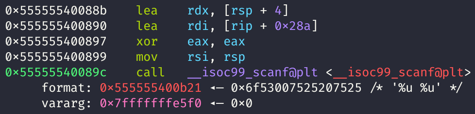
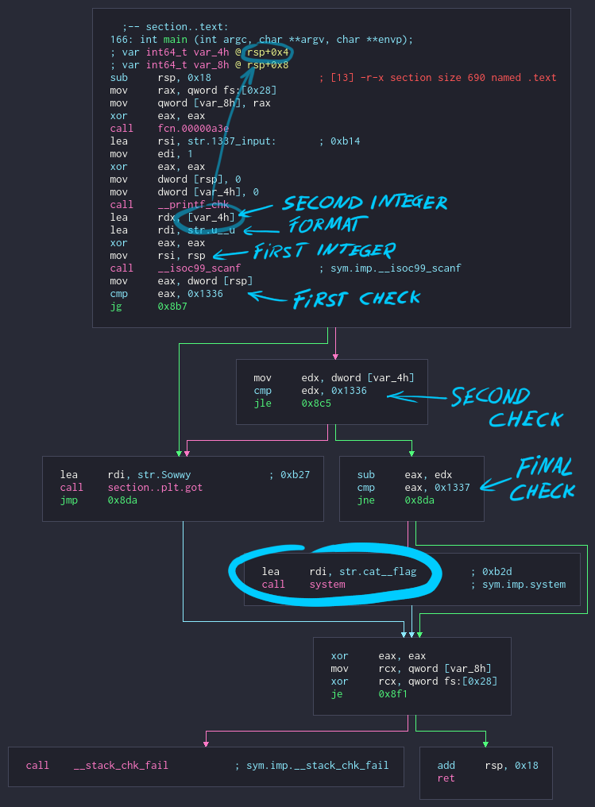

Description
- Category: [pwn, reversing]
- Points: 50 (fixed)
- Solves: 928 (at the time of writing)
- Difficulty: easy
-
Description:
Do you know basic math? svc.pwnable.xyz : 30001 - Files:
Writeup
initial run
when the binary is run, it prints 1337 input: and waits for input
$ ./challenge
1337 input: hello?
passing it hello? did nothing
let's see what the read function expects:

the format string seems to be %u %u, so it reads two unsigned integers
$ ./challenge
1337 input: 69 420still no output
function graph

it is pretty simple. it reads two integers, does some checks and eventually reaches the
system("cat flag") call
after reading the integers, it checks if the first value is greater than
0x1336. since we want to get to the system call, this check needs
to fail, so we have to provide a value less than or equal to 0x1336 to proceed
to the next check
in the second check, the second number is compared against 0x1336. this time we
want the jump to be executed, so the provided number will have to be, same as before, less
than or equal to 0x1336
before the last check, the second number is subtracted from the first one, and the resulting
difference is compared with 0x1337. if it is equal to 0x1337, the
system("cat flag") call is executed and we obtain the flag
so...
n1 <= 0x1336
n2 <= 0x1336
n1 - n2 == 0x1337but the application reads two unsigned integers, how is that possible?
looking for things that could go wrong
searching c scanf format on google returned a wikipedia page with a list of all
valid format sequences with a short explanation
here's the part that concerns us:
%u : Scan for decimal unsigned int
(Note that in the C99 standard the input value minus sign is optional, so if a minus sign is read,
no errors will arise and the result will be the two's complement of a negative number,
likely a very large value).
passing a negative number as input will result in "a very large value", but "a very large
value" is probably larger than 0x1336 and it will fail the check, right?
signed and unsigned comparisons at instruction level
there are two sets of instructions for inequality operators:
signed:
>= : jg(jump if greater)>= : jge(jump if greater or equal)< : jl(jump if less)<= : jle(jump if less or equal)
>= : ja(jump if above)>= : jae(jump if above or equal)< : jb(jump if below)<= : jbe(jump if below or equal)
both checks in the program use a signed comparison instruction, so for all intents and purposes, the "very large values", still act like negative numbers
obtaining the flag
let n1 = k, with k < 0
and n2 = k - 0x1337
then
n1 - n2 = k - (k - 0x1337) = 0x1337let's try it out for an arbitrary value of k
1337 input: -420 -5339
FLAG{sub_neg_==_add}